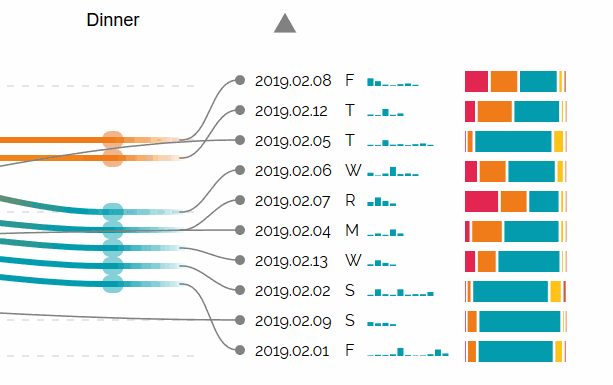
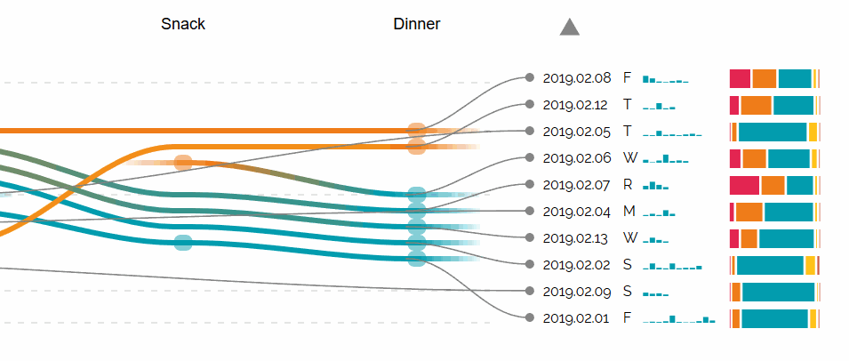
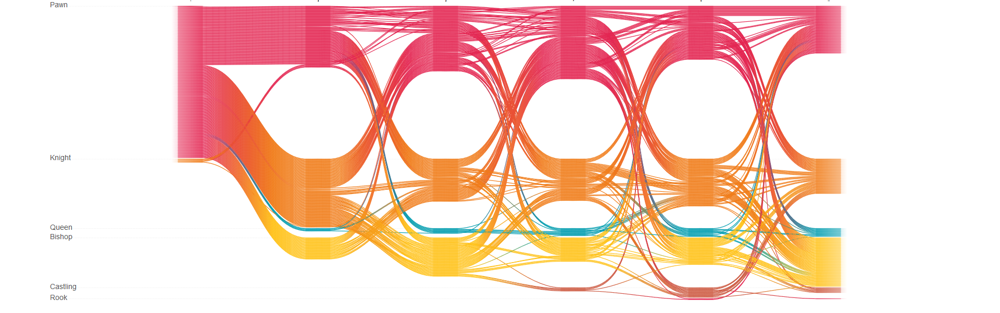
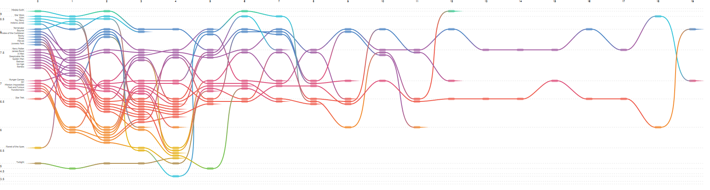

Temporal event sequence alignment has been used in many domains to visualize nuanced changes and interactions over time.
Existing approaches align one or two sentinel events.
Overview tasks require examining all alignments of interest using interaction and time or juxtaposition of many visualizations.
Furthermore, any event attribute overviews are not closely tied to sequence visualizations.
We present Sequence Braiding, a novel overview visualization for temporal event sequences and attributes using a layered directed acyclic network.
Sequence Braiding visually aligns many temporal events and attribute groups simultaneously and supports arbitrary ordering, absence, and duplication of events.
In a controlled experiment we compare Sequence Braiding and IDMVis on user task completion time, correctness, error, and confidence.
Our results provide good evidence that users of Sequence Braiding can understand high-level patterns and trends faster and with similar error.
 Augmented Sequence Braiding, a plugin to display additional features associated to the sequences.
 Chess, a visualization of the sequences of moves played in 200 games of chess.
 How many movies does it take to kill a franchise?, a visualization of the IMDb ratings of sequences of movies in the same franchise.
Usage
Initialize the graph with:
var graph = new SequenceBraiding(data, "svgname", options)
data: an array of arrays containing objects. Each object must have a type and a level. See example below. svgname: the id of the svg in which you want to draw the graph. options: an object containing the parameters for drawing the graph.
Options
The options object is a javascript object that allows you to customize Sequence Braiding in terms of visual representation or to give parameters to the algorithm.
The following section contains an explanation of every parameter that can be customized through the options object.
Features
guidelines: draws faint lines between a level and the other to help distinguish them.
Default: true animate: activates or deactivates animations in the graph, which show how the nodes are moved at each iteration of the intersection reduction algorithm.
Default: false colorbysequence: if set to true, each sequence line will have a specific color, and the colors won't change according to the node level, but will be the same color throughout the full sequence.
Default: false forceLevelName: forces the level name to be displayed even with a high number of lines.
Default: false
Data parameters
numDays: determines the maximum amount of sequences to display.
Default: 10 minEventPerColThreshold: columns that contain a number of events under this threshold will be filtered out.
Default: 1
Algorithm parameters
max_iterations: maximum number of iterations to be run by the intersection reduction algorithm.
Default: 20 path: can be used to force the order of events. If left undefined, the algorithm will guess it while also trying to reduce the intersections as much as possible.
Example: path: ["source", "breakfast", "lunch", "sink"]
Default: undefined levels: can be used to force the order of levels. Especially useful when the levels have a sequential ordering. If left undefined, the algorithm will try to guess it.
Default: undefined
Pairwise alignment parameters
Pairwise alignment parameters are used to generate the minimum supersequence of event types. If path is not forced, Sequence Braiding will use these parameters to generate a supersequence using pairwise DNA alignment.
Depending on the needs of the specific user, these parameters can be changed.
pairwise_alignment_vars: {
MATCH_SCORE: 100,
MISMATCH_SCORE: -10,
BEGIN_GAP_PENALTY: 2,
GAP_PENALTY: 1,
END_GAP_PENALTY: 2,
}